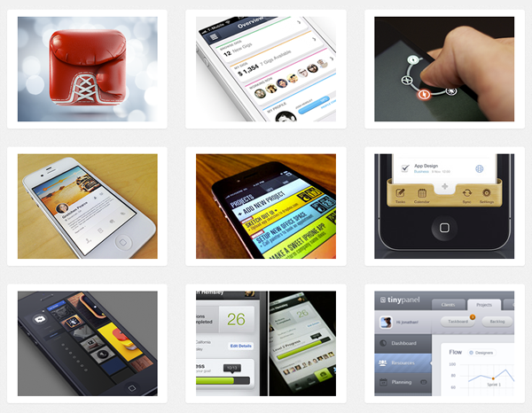
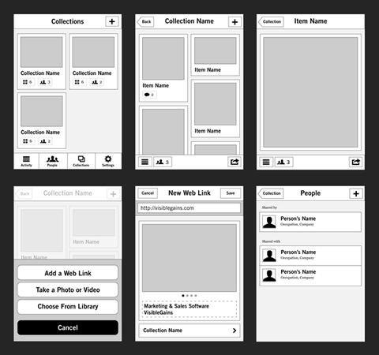
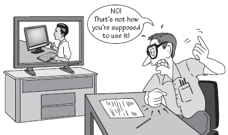

User Centered
Design Process
Overview
User Research
The Interview
- Include a variety of users
- Observe common tasks
- Uncover goals, wishes, frustrations
- If possible, observe workspace
Other Research Methods
Big Data
surveys, analytics, market research
Observation
job shadow, user diaries
Research Analysis
- Identify patterns
- Analyze user workflows
- Define user requirements
Apply Research
Personas
Encapsulate user goals, based on patterns.
Scenarios
Describe user experience from a workflow perspective.
Framework Design
Explore UI Patterns
Tried-and-true patterns are very helpful.
Build Wireframe
Avoid aesthetic treatment and focus on the essentials.
Iterative Improvements
- Navigation
- Layout
- Labeling
- Taxonomy
Designs address persona needs and are validated by testing.
Usability Testing
Testing Plan
- Recruiting strategy
- Test script*
- Tester and observer
- A/B testing?
*Scenarios are useful for creating test script.
Guide, explore, observe
- "Take me on a tour of this page."
- "Tell me more about that..."
- "What would you change?"
- "What do you think that is for?
Invite Developers to Observe
Especially if they resist user-centered design.
Detailed Design
Aesthetic Treatment
- Colors
- Typography
- Transitions
- Lighting effects
Keep the design simple.
High-fidelity prototype
Again, validate design with usability testing.
Create design specifications

- Annotate to provide clarity
- Refer to prototype for behavior
- Include performance goals
Thank You!
Attributions
- Cooper U Interaction Design course
- Reveal.js by Hakim El Hattab
- Images:
{kind=link}
{kind=link}
{kind=link}
{kind=link}